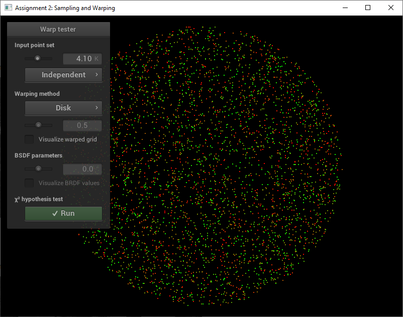
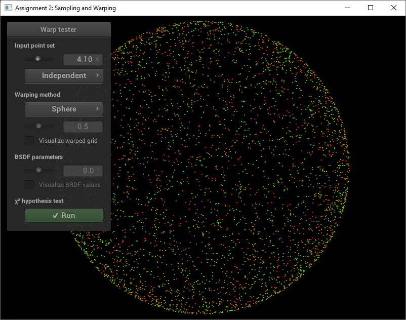
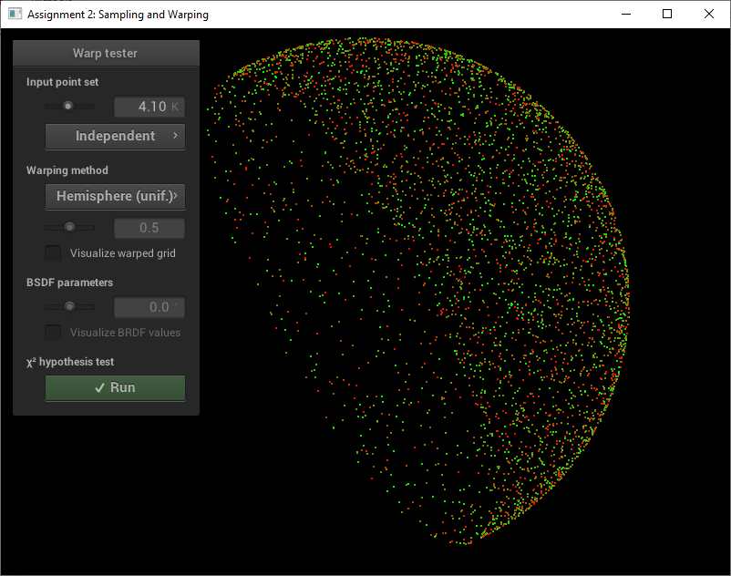
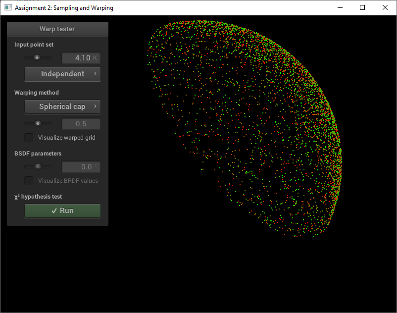
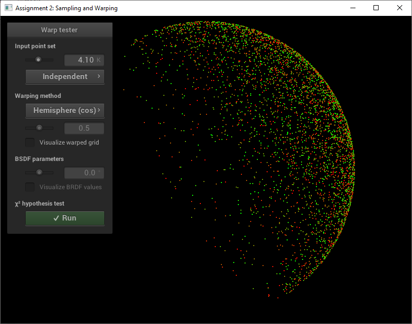
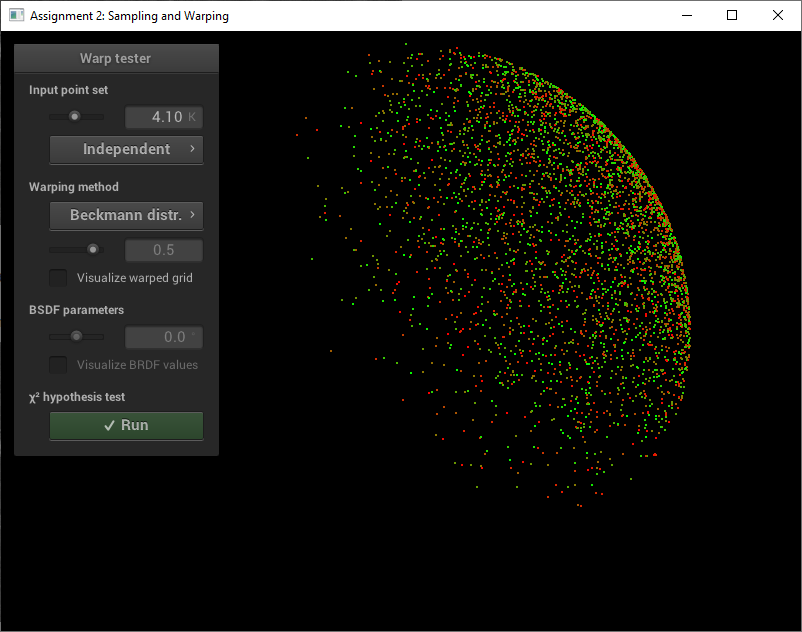

For me this assignment was very easy to implement. With the help of the slides, the online book and some googling I could find all necessary formulas. These could be implemented relatively easy.
As shown on the slides, I used following mapping (where $x$ and $y$ are the sample points on the square):
$\rho = \sqrt{x}$
$\theta = y * 2 * \pi$
$out = \left( \rho * \cos{\theta}, \rho * \sin{\theta} \right)$
This results in the following PDF:
$pdf(x,y) = \begin{cases}1/Z & \sqrt{x^2 + y^2} \leq 1\\0 & \text{otherwise}\end{cases}$
where $Z= \text{const.}$ such that $\int_0^1 \int_0^1 pdf(x,y) dydx = 1$
Using gemoetry, $\frac{1}{\pi}$ seems plausible. We integrate it over the whole uniform disk:
$\int_{-1}^{1} \int_{-\sqrt{1-y^2}}^{\sqrt{1-y^2}} \frac{1}{\pi}dxdy$
$\int_{-1}^{1}\frac{1}{\pi} * 2 * \sqrt{1-y^2}dy = \frac{2}{\pi} * \frac{1}{2} \left(\sqrt{1-y^2}y + \arcsin{x}\right)\bigg\rvert_{-1}^{1} = 1$
As shown on the slides, I used following mapping (where $x$ and $y$ are the sample points on the square):
$z = 2*x-1$
$r = \sqrt{1-z*z}$
$\sigma = y * 2 * \pi$
$out = \left( r * \cos{\sigma}, r * \sin{\sigma}, z\right)$
This results in the following PDF:
$pdf(x,y) = \begin{cases}1/Z & \sqrt{x^2 + y^2} \leq 1\\0 & \text{otherwise}\end{cases}$
where $Z = \text{const.}$ such that $\int_0^1 \int_0^1 pdf(x,y) dydx = 1$
Using gemoetry, $\frac{1}{4\pi}$ seems plausible. We integrate it over the whole uniform sphere.
In order to do so, we convert the coordinates to sphere coordinates. The integral over $r$ can be neglected, because we are only interested in the area of the sphere, not the volume.
The $r^2\sin{\phi}$ (later used with $r=1$) is the jacobian of the conversion between cartesian and spherical coordinates).
$\int_0^{2\pi}\int_0^{\pi} \frac{1}{4\pi}\sin{\phi}d\phi d\theta = \frac{1}{4\pi}\int_0^{2\pi} -\cos{\phi}\bigg\rvert_{0}^{\pi}d\theta = \frac{1}{4\pi}\int_0^{2\pi}1+1d\theta = \frac{4\pi}{4\pi}=1$
Because I have already implemented the uniform sphere, I can create a 3D-point on the sphere area and simply take the absolute value of the $z$-value of the coordinate.
The PDF is also the same, only with a factor 2 in front of it. We only integrate now for $\phi$ from 0 to $\frac{\pi}{2}$, because we do not consider the lower hemisphere.
$\int_0^{2\pi}\int_0^{\pi/2} \frac{1}{2\pi}\sin{\phi}d\phi d\theta = \frac{1}{2\pi}\int_0^{2\pi} -\cos{\phi}\bigg\rvert_{0}^{\pi/2}d\theta = \frac{1}{2\pi}\int_0^{2\pi}1d\theta = \frac{2\pi}{2\pi}=1$
Taken from Wikipedia, the area of the sphere cap is $2\pi r^2 (1-\cos\theta)$ where in our case $r=1$. The PDF is therefore $p(\theta)=\frac{1}{2\pi(1-\cos\theta)}$ if the point is on the surface of the sphere.
For this, I have computed the coordinates on the uniform disk and mapped them to the sphere by using the pythagorean theorem. The PDF is given in the task description:
$p(\theta) = \frac{cos\theta}{\pi}$
This is easy to implement: $\cos\theta$ is just the $z$-component of our sampled point, because our normal is $(0,0,1)$ and the dot product of our normal and the sampled point returns $\cos\theta$.
For implementation, I've searched the online textbook and found the formulas in the Chapter for Sampling Reflection Functions.
Using the formula given in the task description, we can write the double integral:
$\int_0^{2\pi}\int_0^{\pi/2} p(\theta, \phi) d\theta d\phi = 2\pi \int_0^{\pi/2}\frac{\exp\left(\ -\frac{1-x^2}{x^2 \alpha^2}\right)}{\pi\alpha^2x^3}\sin\theta \frac{dx}{-\sin\theta}$
where we have used the fact that $p$ is not dependent on $\phi$. Furthermore we have used the substitution $x=\cos{\theta}$ and $\tan^2\theta = \frac{1-x^2}{x}$, which results in $\frac{dx}{d\theta} = -\sin\theta \Rightarrow d\theta = \frac{dx}{-\sin\theta}$.
This integral can be further simplified:
$-\frac{2}{\alpha^2}\int_0^{\pi/2}\frac{\exp\left(-\frac{1-x^2}{x^2\alpha^2}\right)}{x^3}dx$
Using $\int f'(x) ~ e^{~f(x)} dx = e^{~f(x)} + C\text{, where } C\in\mathbb{R}$, with $f=-\frac{1-x^2}{x^2\alpha^2}$ and $f' = \frac{2}{x^3\alpha^2}$, we can simplify the integral to:
$-\exp\left(-\frac{1-x^2}{x^2\alpha^2}\right)+C$ which is (replacing $\frac{1-x^2}{x^2}$ by $\tan^2$):
$-\exp\left(-\frac{\tan^2\theta}{\alpha^2}\right)\bigg\rvert_0^{\pi/2}=1$
No special problems arose.